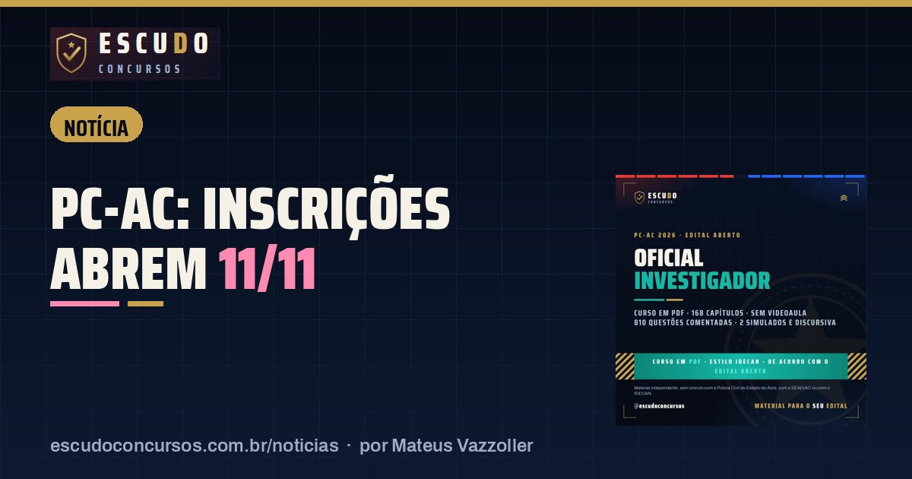

PC-AC Oficial Investigador: inscrições abrem em 11/11, e a isenção dura só dois dias
NotíciaPublicado em 10 de novembro de 2026 · por Mateus Vazzoller, ESCUDO Concursos

Abrem nesta quarta-feira, 11/11/2026, no site do IDECAN, as inscrições do concurso da Polícia Civil do Acre para Oficial Investigador de Polícia: 74 vagas imediatas, remuneração de R$ 6.342,07 e taxa de R$ 105,00. O prazo de inscrição vai até 14/12/2026, mas o pedido de isenção da taxa tem janela curta: só 11 e 12/11/2026.
| Órgão | Polícia Civil do Estado do Acre (PCAC), com a SEAD/AC |
|---|---|
| Banca | IDECAN |
| Vagas | 74 imediatas (7 PcD) e cadastro reserva |
| Remuneração | R$ 6.342,07 |
| Inscrições | 11/11 a 14/12/2026; taxa de R$ 105,00 paga até 15/12 |
| Isenção | Só em 11 e 12/11/2026 |
Por que os dois primeiros dias importam
A maioria dos prazos deste concurso é longa: são mais de quatro semanas de inscrição e o boleto pode ser pago até 15/12/2026. A exceção é a isenção. Quem pretende pedir que a taxa não seja cobrada precisa fazer isso logo na abertura, em 11 ou 12/11, seguindo as hipóteses e os comprovantes que o Edital nº 001 SEAD/PCAC exige. Leia esse item do edital hoje, separe os documentos e deixe tudo pronto para enviar amanhã.
O cargo que você vai disputar
O Oficial Investigador nasceu da unificação dos antigos cargos de escrivão e de agente de polícia, pela Lei Complementar estadual nº 496/2025. O perfil é de investigação apoiada em dados, documentos e movimentações financeiras. A lotação é por município, com preferência pelo interior do Acre, e o edital prevê permanência mínima de 5 anos.
Confira os requisitos antes de pagar
| Requisito | O que o edital pede |
|---|---|
| Escolaridade | Curso superior completo em qualquer área |
| Habilitação | CNH categoria mínima "AB" |
| Idade | 18 anos, sem idade máxima |
| Taxa | R$ 105,00, paga até 15/12/2026 |
Atenção à habilitação: categoria mínima "AB" quer dizer carro e moto. Quem tem só a categoria B não cumpre o requisito, então vale ler no edital em que etapa a CNH é cobrada antes de pagar a taxa.
Datas até a prova
| Etapa | Data |
|---|---|
| Pedido de isenção | 11 e 12/11/2026 |
| Inscrições | 11/11 a 14/12/2026 |
| Pagamento da taxa | Até 15/12/2026 |
| Locais de prova | 15/01/2027 |
| Prova objetiva e discursiva | 24/01/2027, das 7h às 12h (horário do Acre) |
As provas serão aplicadas em 13 cidades do estado, de Rio Branco a Cruzeiro do Sul, Tarauacá e Sena Madureira. São 100 questões objetivas e uma redação no mesmo turno de cinco horas, e os Conhecimentos Específicos respondem por 75% da nota objetiva. O detalhe de cada matéria está no guia do concurso PC-AC.
Curso ESCUDO Oficial Investigador da Polícia Civil do Acre em PDF: 168 capítulos e 810 questões, de acordo com o edital aberto, Prova discursiva e 2 simulados de 100 questões. De R$ 47 por R$ 37 com o cupom PCAC37 até 14/12/2026.
Ver o curso
Perguntas frequentes
Quando abrem as inscrições da PC-AC?
Em 11/11/2026, no site do IDECAN, e vão até 14/12/2026. A taxa de R$ 105,00 pode ser paga até 15/12/2026.
Até quando posso pedir isenção da taxa?
Só em 11 e 12/11/2026. Depois disso, a inscrição só vale com o pagamento da taxa.
Quando é a prova da PC-AC?
Em 24/01/2027, domingo, das 7h às 12h no horário do Acre, com prova objetiva e discursiva no mesmo turno.
Leia também
- Rotina de estudosCronograma de estudos PC-AC Oficial Investigador: 10 semanas até a prova de 24/01/2027
13 de novembro de 2026 · Plano de 10 semanas para a prova da PC-AC de 24/01/2027: horas pelo peso do edital IDECAN, Específicos primeiro, discursiva toda semana e simulados de 5 horas.
- NotíciaGM São Gonçalo: inscrições terminam quarta-feira, 18/11, e o boleto vence no dia seguinte
13 de novembro de 2026 · Concurso Guarda Municipal de São Gonçalo/RJ: inscrições no SELECON terminam em 18/11/2026, boleto de R$ 95,18 até 19/11. 100 vagas e prova em 24/01/2027.
- NotíciaPM-SC Soldado: inscrições terminam segunda-feira, 16/11, e a idade máxima conta nesse dia
12 de novembro de 2026 · Concurso PM-SC Soldado: inscrições no Instituto AOCP terminam em 16/11/2026. Quem completa 30 anos até essa data fica de fora. Taxa de R$ 200,00 e prova em 13/12.
Guia completo do concurso: edital, vagas e o que cai · Mais notícias e dicas de concursos